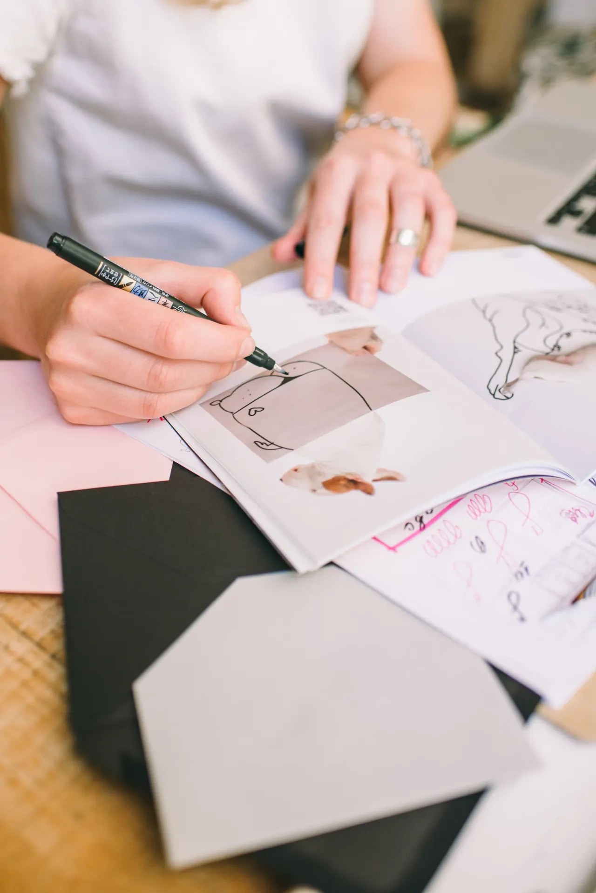

CREATE / SELF-GUIDED
Redesign something old.
Give an existing object or garment a fresh perspective.
Create / Art & fashion
Explore expression through material, image, personal style and everyday creative practice.
Creative Expression
Through workshops and programs centered around art and fashion, we provide tools for young people to express their emotions and experiences in healthy, constructive ways.
Fashion Forward
Our fashion initiatives celebrate individuality while building technical skills, confidence, and community among youth faced with adversity and discrimination.
Choose your medium
Sketch, draw or build a mood board from your own visual references.
Explore silhouettes, color and your visual identity.
Rework something you already own. Begin with a small change.
Notice light, texture or a detail you might normally pass by.
Arrange materials, imagery and type to communicate an idea.
Use making to notice and express your own perspective.
Begin with what you have
CREATE / SELF-GUIDED
Give an existing object or garment a fresh perspective.

CREATE / SELF-GUIDED
Use line, shape or texture to express what strength means to you.
Shared creativity
Share a work in progress, an illustration or a fashion project. Submissions stay private until review, and only appear publicly with your permission.